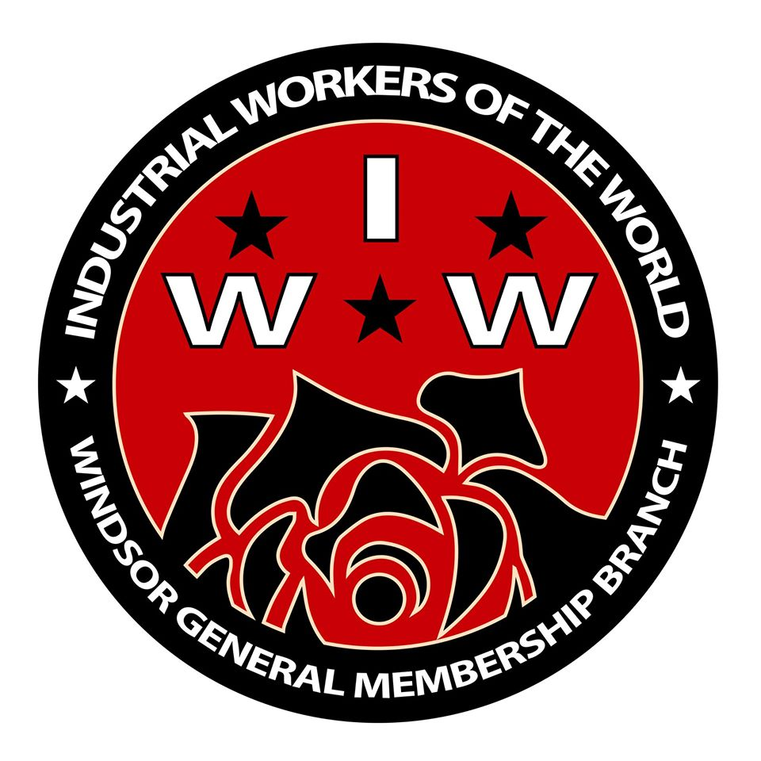

Submitted on Tue, 01/06/2015 - 12:50pm
By x353319
For the last year-and-a-half, the IWW in Windsor has been working on a campaign to organize panhandlers and buskers in the downtown core of this border city. The campaign started out as the Windsor Street Solidarity Committee and in late 2014 has expanded to form the Windsor Panhandlers and Buskers Union.
In late November 2014 I had the pleasure of sitting down with Fellow Worker (FW) Richard from the Windsor General Membership Branch (GMB) and one of the main organizers in the Windsor Panhandler and Buskers Union. He explained how the campaign started: “At first we really just did what were basically patrols with branch members around downtown.” At this point they called themselves the “Street Solidarity Committee.”
Submitted on Tue, 12/30/2014 - 2:10pm
 Solidarity with the CSAAWU
Solidarity with the CSAAWU
In support of the South African farmer workers and their supporting union, the Commercial, Stevedoring, Agricultural and Allied Workers Union (CSAAWU) the IWW International Solidarity Commission (ISC) issued the following statement:
After the rebellion of South African farmworkers who stood up and fought for their rights and working conditions in 2012/13, the CSAAWU defended dismissed and victimized workers and took cases to the Labour Court where farmworkers were heard the first time since 1994.
Two cases were lost and the CSAAWU has been issued with cost orders in excess of R 600,000 ($ 53,500) for supporting the farmworkers struggle.
The charge is unacceptable but not surprising. This case shows again in which favors Labour courts act and make decisions. The voice of the working class has never been welcome in any legal or administrative office in a system based on exploitation and violence.
Submitted on Thu, 12/25/2014 - 8:17pm
 Check out some of the latest news from IWW General Membership Branches (GMBs) throughout the world!
Check out some of the latest news from IWW General Membership Branches (GMBs) throughout the world!
Download Black Cat Moan, published by the Upstate New York GMB.
Read up on latest efforts by the Pittsburgh branch in the January/February/March 2015 issue of Solidarity!
Click here to view the Yule 2014 issue of Prairie Fire, newsletter of the Madison IWW GMB.
Does your branch have a newsletter to share with the world? Send it to iw@iww.org!
Submitted on Tue, 12/23/2014 - 3:32pm
Holiday message from the Dec 28, 1935 issue of the Industrial Worker, still holds true today:
Submitted on Tue, 12/09/2014 - 7:32pm
 Despite the corporate talk of "team" and "love," here's what working there was really like -- and why I had to quit
Despite the corporate talk of "team" and "love," here's what working there was really like -- and why I had to quit
By Nick Rahaim, Salon.com
After years of organizing in secret, building bonds over beer and supporting co-workers when issues have arisen with management, team members at a Whole Foods Market in San Francisco disrupted the normal workday and demanded a $5 an hour pay increase last month. More than 20 employees beckoned store management to the floor and presented a petition signed by more than 50 of the store’s workers calling for more paid time off, better health and retirement benefits as well as steady, consistent schedules.